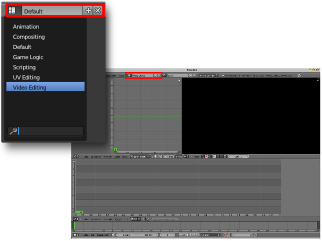
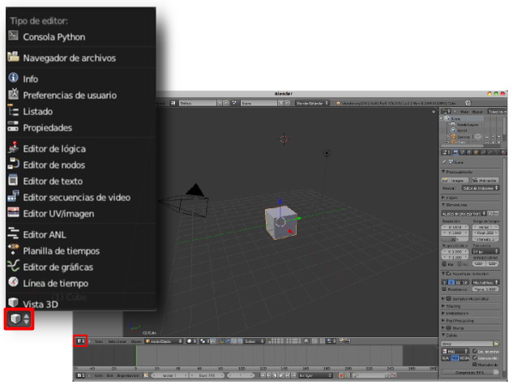
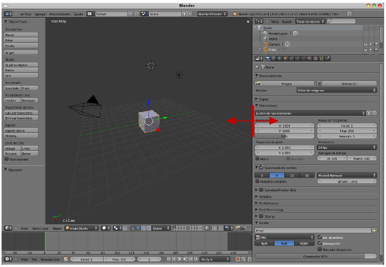
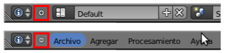
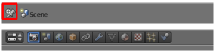

Interfaz
Además de lo que se muestra al lanzar el programa hay otras muchas cosas que permanecen ocultas. Blender puede ser utilizado para fines muy distintos y su organización está pensada para que podamos pasar de un entorno a otro en función de nuestras necesidades. Por ejemplo, si estamos modelando lo más habitual es estar en el entorno de trabajo Default (Por defecto) y si vamos a hacer el montaje final de una película lo lógico es pasar al entorno de trabajo Video Editing (Editor de vídeo).
Las distintas áreas en las que se divide un entorno de trabajo se denominan editores y pueden ser elegidos por el usuario desplegando el menú correspondiente al icono de cada área.
El espacio destinado a cada editor puede variarse de tamaño de una manera muy intuitiva. Basta pasar el ratón por su contorno y esperar a que el cursor cambie su apariencia a dos flechas que apuntan a izquierda y derecha .
Algo que no debe pasarnos desapercibido en este momento es que algunos de los editores cuentan con sus propios menús. Por ejemplo el editor Vista 3D, que hemos desplegado en la anterior imagen, muestra al lado de su icono tres menús: Vista, Seleccionar y Objeto.
Posibles situaciones extrañas
Han desaparecido los menús escritos tipo Archivo, Agregar...
Ocurre porque hemos tocado el pequeño icono en forma de signo "-" y parte de la barra se ha encogido. Para restaurarla hay que pulsar el pequeño icono que ahora tiene forma de signo "+".
Ha desaparecido toda la barra de los menús; no sólo los textos, también los iconos.
Hemos desplazado verticalmente uno de los bordes equivocados para ampliar el tamaño del área. No hemos tirado hacia arriba del límite del editor sino del límite de la barra de menús e iconos (algo más abajo) con lo que éste se ha encogido. Sin embargo al replegarse se ha creado un pequeño icono con signo "+" para su restauración.
Han desaparecido los botones habituales de Maximizar, Minimizar... y Blender se ha puesto a pantalla completa.
Hemos pulsado el icono destinado a ese efecto en la parte alta a la derecha de la interfaz. El mismo icono restablece la configuración.